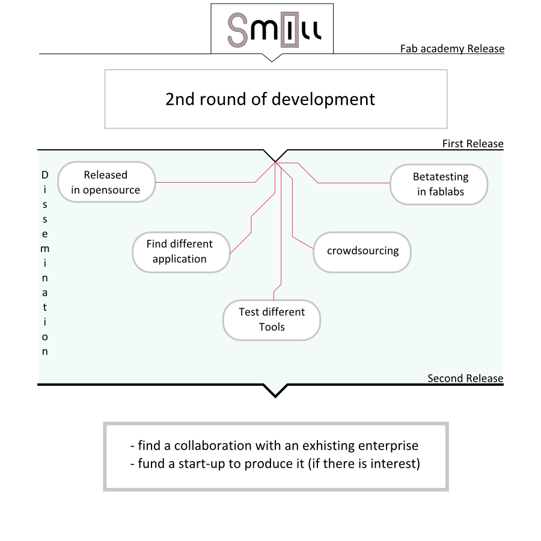

I've planned the following steps for my project. Being a very early stage it's hard to plan a realistic schedule, and it could change a lot based on the next period of tests and debugging.
Here a synthesis of the plan:

During the fab academy I could do only two versions of Smill, and it's definitely not enough.
Here a list of known problem to solve\test to do:
All the implementations are incremental, there are also a couple of things to test defiitely more radical that involves the structure of the frame and the Z movement, but not so urgent at the moment.
To get to this point I estimate a cost of 2-3k € and two full time months of development, this means a total of 6-7k€ at least. The best way to get access to this amount of money is a small local grant, not an investor, an enterprise or a crowdfunding.
The project is already public, of course, but I'm not planning to push it until it's not reliable enough. and that means it's stable, rigid, and precise.
After that the plan is to work on five different ways:
Open source release
The project is gonna be released in open source to allow everyone to develop new ideas and bring on personal, independent experiments. Probably the licence I'm gonna use is a CC BY SA. There is gonna be no limitation on the commerciability of derivates, because my primary objective is to spread the accessibility to big CNC milling machines.
Beta testing in fablabs
I'd like to involve fablabs that need to buy a big CNC in building a Smill, as a temporary or permanent solution. I could give free support and get back a great support on documentation efficiency and betatesting. To do so, I hope there is gonna be other opportunities like Fab Replication Grants, to help the labs making experiments on Smill.
Find different application
When I talk to people about Smill I usually notice that there is no entusiasm in their eyes, and it stays so, until you start to talk about possible applications. Obviously none of these is ready right now, but it gives a prospective of te goal. At the moment a good plan to work on applications to explain the possible value of Smill could be:
Test different tools
Smill is designed to don't have any support underneath, this gives a lot more freedom in testing different tools, if a sacrificial layer is not used. Even if the most common solution is cilindrical tool that spin, interesting alternatives are not working in that way, and they need to have the possibility to pass through the piece that it's working.
Just a couple of example to have an idea: use a jig saw could cut quicker with less vibration parallel to the piece. Another example could be a hot wire for foams. In general the objective would be to allow all the possible modifications and collect them in a repository that keeps track of the forking and modifications.
beside the fundings to support the development of the project, this would be a good idea also to collect feedback and have an idea of how many people would be interested in Smill. Have being funded gives you also a little bit more reliability when you talk to enterprises to duscuss partnerships, or with other funders.
After all these steps, I think that the Product is ready to get to the market. there are two different way to do that: I can look for partnerships with existing enterprises (like Shopbot or Roland) or go on with a start-up. Evaluate right now what's the best choise is nearly impossible.
I will wait to collect feedbacks and inputs.